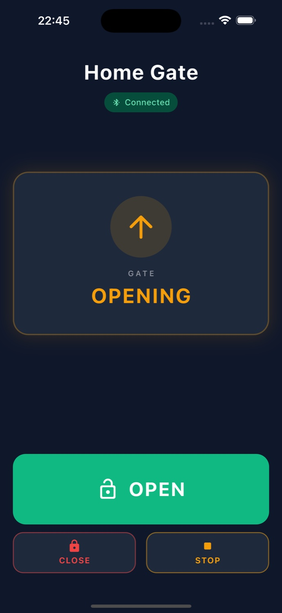
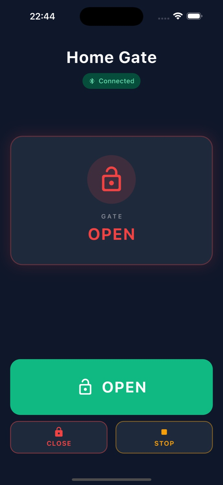
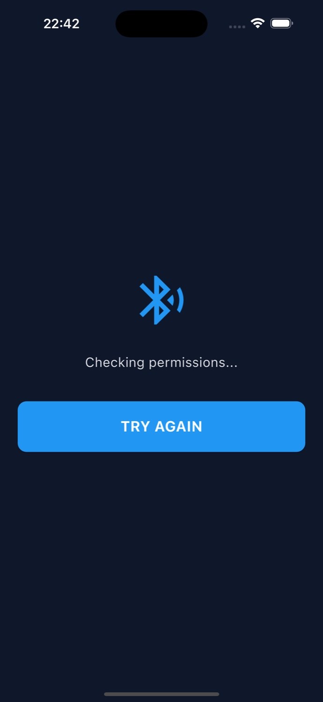
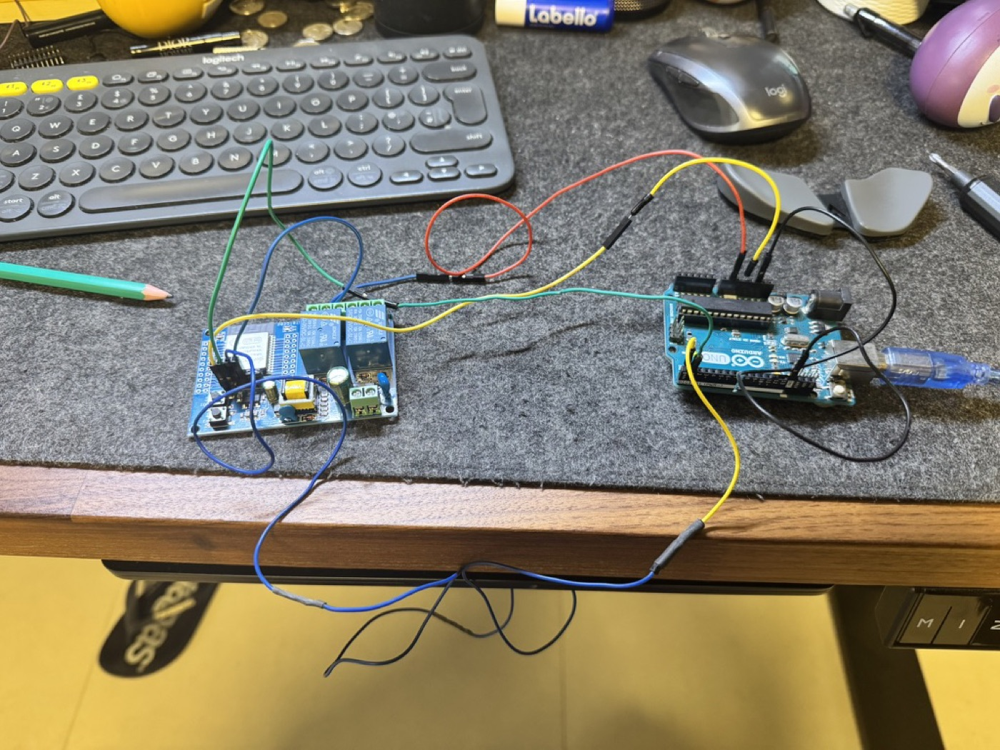
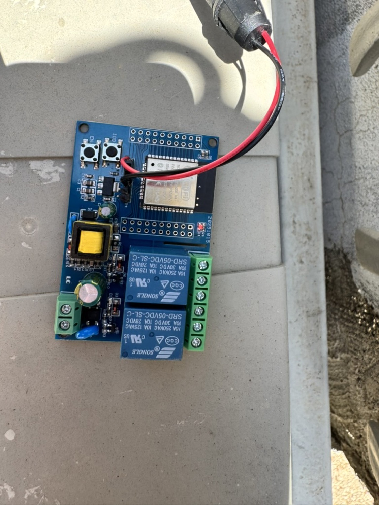
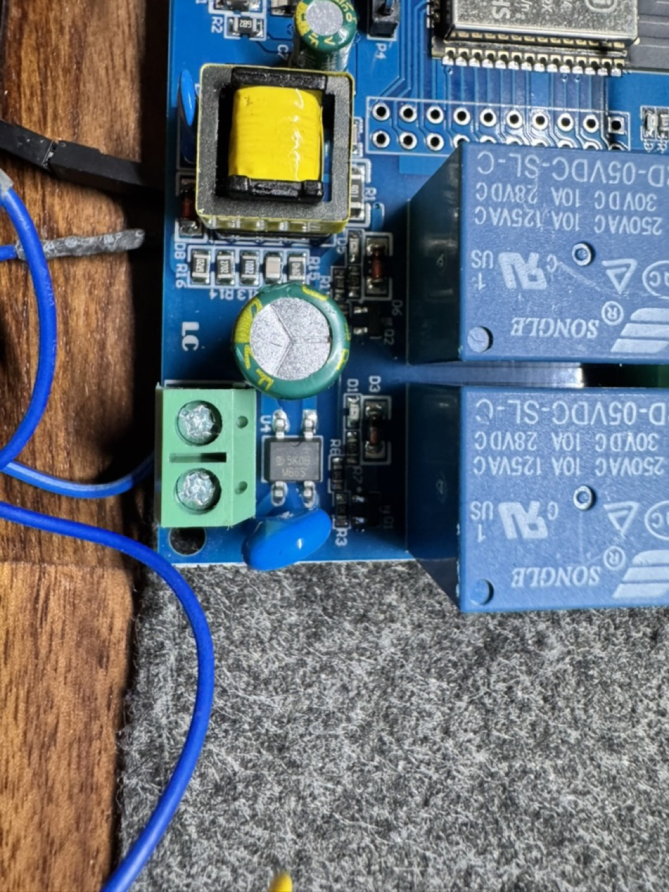

Work / Hardware × Mobile / Constraint-driven UX
Home Gate
Opening a gate should take one tap. A Bluetooth gate controller for elderly users, designed around the physics of a metal gate and the constraints of two mobile ecosystems.



The clicker everyone keeps losing
A traditional gate remote is a small plastic clicker you keep in your car. Batteries die. It slips between the seats. You leave it at the office. And when family comes over, there is only ever one of them.
My family had exactly this problem: several people, elderly relatives among them, all needing to open the same home gate, usually from a car pulling into the driveway. Every existing option carried friction: a wall intercom you had to walk to, a GSM opener that meant dialling a phone number, or the clicker itself, which everyone kept losing.
Success looked like one sentence: an elderly family member, with no technical training, pulls up to the gate, glances at their phone, taps one button, and the gate opens. That is the entire user journey.
The interesting part wasn’t the app
The app was the easy half. The real design work lived in the physical and human constraints that shaped every decision, and most of them were invisible until I hit them.
- Metal blocks radio. The gate motor’s controller sits behind a metal sliding gate. Closed, it is effectively a Faraday cage: the metal reflects and absorbs 2.4 GHz signal and range collapses. No spec sheet warned me; I only saw it when the Bluetooth connection dropped the moment I stepped outside. RF physics does not care about your roadmap.
- Elderly users will not tolerate friction. An account, a PIN on every open, a scan to sit through, a “connection status” to interpret, any one of these would have killed adoption. I had to treat every tap beyond the first as a failure.
- iOS and Android disagree about Bluetooth. iOS does not support classic Bluetooth SPP, the easy path in most ESP32 tutorials. To work on iPhone the app had to use Bluetooth Low Energy, a different protocol with different code on both the phone and the hardware. Cross-platform was a hard requirement, not a nice-to-have.
- Public distribution was not simple. A gate opener that only works with my specific ESP32 fits Apple’s rejection criteria almost perfectly: “requires additional hardware not available to reviewers.” That shaped both the copy and the app’s actual behaviour.
Being your own user, for a while
The primary users were people in my own home. I lived with them and watched how they used the old remote every day. A few observations reshaped the design:
- They rarely opened the app “from cold.” The phone was already in hand, coming out of a pocket at the last moment as they approached.
- The stressful moment was pulling up with someone honking behind them. Any delay felt catastrophic.
- They would not wait through a splash screen or an animation. Static beat motion.
- They wanted proof the gate had received the command, immediately and visibly.
The brief compressed to this: you have less than one second between the tap and the thought “it worked.” Everything else is failure.
No amount of user interviews would have surfaced the “car pulling up with someone honking behind you” moment. Being your own user is a legitimate research method.research reflection
Every tap beyond the first is a failure
Each decision traces back to that one-second budget:
- One primary action. A single large green OPEN button owns more than a third of the screen. Close exists but is visually secondary, closing manually is rare in practice.
- Live status, not a spinner. A card at the top shows gate state in colour: CLOSED green, OPEN red, OPENING amber. Users see the result of their action, not a loading indicator.
- Optimistic UI. Tapping OPEN shows OPENING instantly, before the gate reports back. The feedback loop feels immediate even though the physical response takes a second or two.
- Auto-connect, no scan screen. Opening the app immediately begins searching. There is no “connect” tap, no device picker, the app either finds the gate or shows an error.
- Dark by default. People use this at night, in cars, in bright sun. Dark mode with strong colour-coded states survives more lighting conditions than light mode does.
- No PIN, no account. Security comes from physical BLE range and the private tester group. A PIN would have added constant friction for zero real security gain here.

A virtual finger on the wall button
The app is only half the product. The gate is triggered by an ESP32 wired to the existing Beninca controller’s step-by-step input. The ESP32 acts as a virtual remote button: when its relay fires, the controller sees exactly the same signal as a press of the wired wall button.
- Non-invasive integration. The ESP32 sits in parallel with the wall button. If it ever fails, the wall button still works. Nothing about the original installation changed.
- Placement beats antenna power. I first tried boosting BLE transmit power in software; the gain was tiny. Physically moving the ESP32 out of the metal enclosure improved range five-fold. Hardware placement is a UX decision.
- Power stability. Enabling Bluetooth browned out the ESP32 on weak USB sources. A dedicated 5V supply fixed reliability problems that had looked like software bugs.



Getting it onto family phones
Building the app was only part of it. Getting it onto family members’ phones, iPhones and Androids held by non-technical people, needed its own strategy.
Android uses Google Play’s Internal Testing track: family tap an install link and the app arrives like any normal app, with automatic updates, for a one-time developer fee.
iOS started on TestFlight, which works but expires builds every 90 days. To end that cycle I pursued full App Store distribution, which meant a demo mode for reviewers without the hardware, a publicly hosted privacy policy, screenshots for several device sizes, and copy that framed the app as a generic Bluetooth relay controller rather than a niche personal tool.
What I would do differently
Being honest about the parts that did not go smoothly:
- I optimised before validating placement. I tuned code and weighed antenna upgrades before physically moving the ESP32 out from behind the metal gate. Twenty minutes of relocation would have saved days of software debugging.
- I built a PIN screen I didn’t need. It looked like the responsible choice and was pure friction for zero security gain, anyone with range and the app already had access. One conversation with an elderly user beforehand would have caught it.
- Cross-platform tooling didn’t reduce cross-platform overhead. Flutter wrote the app quickly, but privacy policy, code signing, Bundle IDs, and App Store submission ate more time than the app itself. The overhead moved, it didn’t vanish.
- I underestimated the status indicator. The first prototype was just a button, and users tapped it repeatedly because they weren’t sure it worked. The status card was the single highest-impact addition.
The best interfaces are the ones people stop noticing
The app now runs on several family iPhones and Android phones. My elderly relative uses it every day and has never asked how it works, which is the best measurable outcome I could hope for. The gate opens as they approach. The friction they used to accept, hunting for the clicker, dead batteries, the walk to the intercom, has quietly disappeared.
The deeper lesson: UX for hardware is inseparable from the physics of the hardware. A design that works on the whiteboard breaks when the radio can’t get through a metal gate. A “simple app” gets shaped, over months, by where you mount the microcontroller and how many amps the charger provides. The strongest decisions came from living with the product, not from a brief.
The best interfaces are the ones people stop noticing.Home Gate